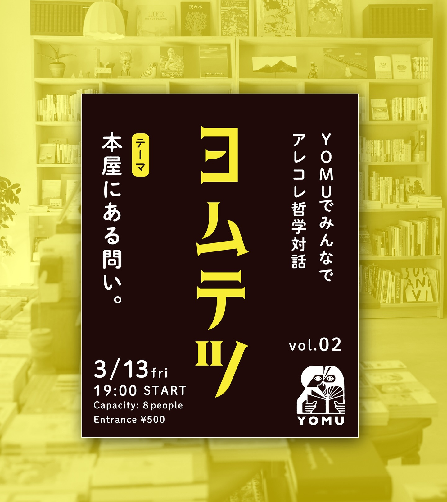

サッカー部では「態度が悪すぎる」と叱られました。そのくせ会社の面接に行くと、「大物に見える」とよく言われる。同じ態度が、場面によって叱られたり、大物扱いされたりする。態度って、なんなんだろう。
エンジニアとして働いていたころ、「こういう態度の人とは仕事したくない」と思うことが、はっきりありました。態度も、技術として扱えるんじゃないか。それが、私がコーチングを始めた出発点です。
いまは山梨県韮崎市で、本屋での対話の会の進行、街の人が語るイベントの運営、中高生の居場所での「問いコーナー」を続けています。どの場でも見ているのは同じこと。人の態度が、場の空気を決めている。